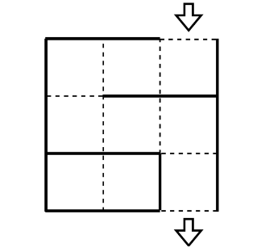
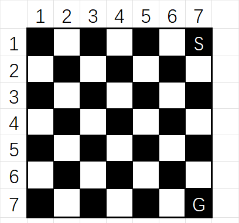

题意
给定一个 N 行 M 列的空白方格地图，你可以在相邻格子中适当放置墙壁，以组成一个迷宫。你需要求出是否存在从右上角到右下角，经过 K 个方格的无分支路径，如果存在，输出这个迷宫地图。
例如，以下就是一个在 N=3 列 M=3 行，经过 K=7 个方格的无分支路径：

别问我为什么贴个样例在这。
思路&做法
我们可以把“在格子边插墙”转化为“寻找路径，再沿路径边缘插墙”，这样就只需要求出路径即可。
容易得出，该程序有以下几个步骤：
-
判断是否存在路径。
-
存在，则计算路径。
-
按题目方式输出。
判断是否存在路径
若存在从右上角到右下角的路径，应满足以下条件：
对于第一和第二个条件，是显而易见的。（你都不够格子贴边走，或者塞都塞不下，怎么能行）
而对于第三个，我们可以用棋盘染色来证明：

容易看出，每走一个格子，颜色就会切换。
如果一个路线是可行的，它最终到达的位置应该与原路线（从起点一路向下到终点）一致。（废话）
也就是说，它终点的颜色应该与原路线终点的颜色一致。
所以只有在每次增加 2 格的情况下，即该路线多经过了一个“黑白矩阵”，然后又回到原路线的黑白排列，该路线才可行。
计算路径
不要管他那构式输出，自己建一个不香吗。
我们可以按 _map[x][y]=L R U D 的方式建图，建完后再考虑放墙。
在满足条件，每次增加两个格子的情况下，容易得出，我们需要往原线路左侧部分扩展 2 的若干倍个格子。
那么怎么扩展呢？Mindustry 启动！

这是一个 5×10 的迷宫，我们可以在第 1、2 行“兜弯”，如下图：

我们需要两行一起处理，并在在适当时候调整方向，形成闭合路段。
兜到下面，有可能会出现这种情况：

欸不是怎么没地方了，没关系我们可以在最后一行做文章

如图，每次再扩展 2 格，就可以适应所有情况。
这就是基本的思想。因为 K≤N⋅M，所以直接循环 K 次即可。
此段代码：
1
2
3
4
5
6
7
8
9
10
11
12
13
14
15
16
17
18
19
20
21
22
23
24
25
26
27
28
29
30
31
|
for(int i=1;i<=n;++i){
_map[i][m]=D;
}
int x=-1,y=0;
int i=1;
for(;i<=(k-n)/2;++i){
if(y<1){
x+=2;
y=m-1;
if(x+1>n) break;
_map[x][y+1]=L;
}
_map[x][y]=(y==1)?(D):(L);
_map[x+1][y]=R;
y-=1;
}
if(x!=-1) _map[x][y+1]=D;
if(i<=(k-n)/2){
x=n,y=1;
for(;i<=(k-n)/2;++i){
_map[x-1][y]=D;
_map[x][y]=R;
_map[x][y+1]=U;
y+=2;
}
}
|
此段代码运行过程：（应该没问题吧）

输出
这下不得不管了。
输出方式：
上图中墙壁用 + 代替，方格用 o 代替。起点，终点用 S 和 G。如果说两个方格之间有路线连接，就用 . 表示（即平地）。没有路线连接，也就是原文的“墙”，就用 | 或 - 表示（当然，如果是上下无连接，是 -，另一种就是 |）。
样例 1 即是上图第 4 步，可以对着参照一下。
那么，怎么输出呢？
显而易见，输出第一行，是 2M−1 个 +、1 个 S、1 个 + 连接起来的。最后一行同理，把 S 替换成 G 即可。
而对于中间部分，先输出 1 个 +，然后分两种情况处理：
判断这两种情况、交叉排列只需要 mod 一下即可。
输出看完整代码解释。
至此，这道题就做完了。
几个小细节
-
L R U D 的表示不要牵扯到 0，这会造成支路。
-
记得将 if(x!=-1) _map[x][y+1]=D; 加上，也就是将没有闭合的地方调整好。
-
小心越界与 x、y、i、j 的处理。
完整代码
1
2
3
4
5
6
7
8
9
10
11
12
13
14
15
16
17
18
19
20
21
22
23
24
25
26
27
28
29
30
31
32
33
34
35
36
37
38
39
40
41
42
43
44
45
46
47
48
49
50
51
52
53
54
55
56
57
58
59
60
61
62
63
64
65
66
67
68
69
70
71
72
73
74
75
76
77
78
79
80
| #include<bits/stdc++.h>
#define L 1
#define R 2
#define U 3
#define D 4
using namespace std;
const int maxn=105;
int n,m,k;
int _map[maxn][maxn];
void output(){
for(int i=1;i<=2*m-1;++i) printf("+");
printf("S+\n");
for(int i=1;i<2*n;++i){
if(i%2==1){
printf("+");
for(int j=1;j<2*m;++j){
if(j%2==1) printf("o");
else{
if(_map[(i+1)/2][j/2]==R||_map[(i+1)/2][j/2+1]==L) printf(".");
else printf("|");
}
}
printf("+\n");
}
else{
printf("+");
for(int j=1;j<=2*m;++j){
if(j%2==1){
if(_map[i/2][(j+1)/2]==D||_map[i/2+1][(j+1)/2]==U) printf(".");
else printf("-");
}
else printf("+");
}
puts("");
}
}
for(int i=1;i<=2*m-1;++i) printf("+");
printf("G+\n");
}
int main(){
scanf("%d%d%d",&n,&m,&k);
if(k<n||k>(n*m)||(k-n)%2!=0){
printf("No\n");
return 0;
}
else printf("Yes\n");
for(int i=1;i<=n;++i){
_map[i][m]=D;
}
int x=-1,y=0;
int i=1;
for(;i<=(k-n)/2;++i){
if(y<1){
x+=2;
y=m-1;
if(x+1>n) break;
_map[x][y+1]=L;
_map[x+1][y+1]=D;
}
_map[x][y]=(y==1)?(D):(L);
_map[x+1][y]=R;
y-=1;
}
if(x!=-1) _map[x][y+1]=D;
if(i<=(k-n)/2){
x=n,y=1;
for(;i<=(k-n)/2;++i){
_map[x-1][y]=D;
_map[x][y]=R;
_map[x][y+1]=U;
y+=2;
}
}
output();
return 0;
}
|
The end.